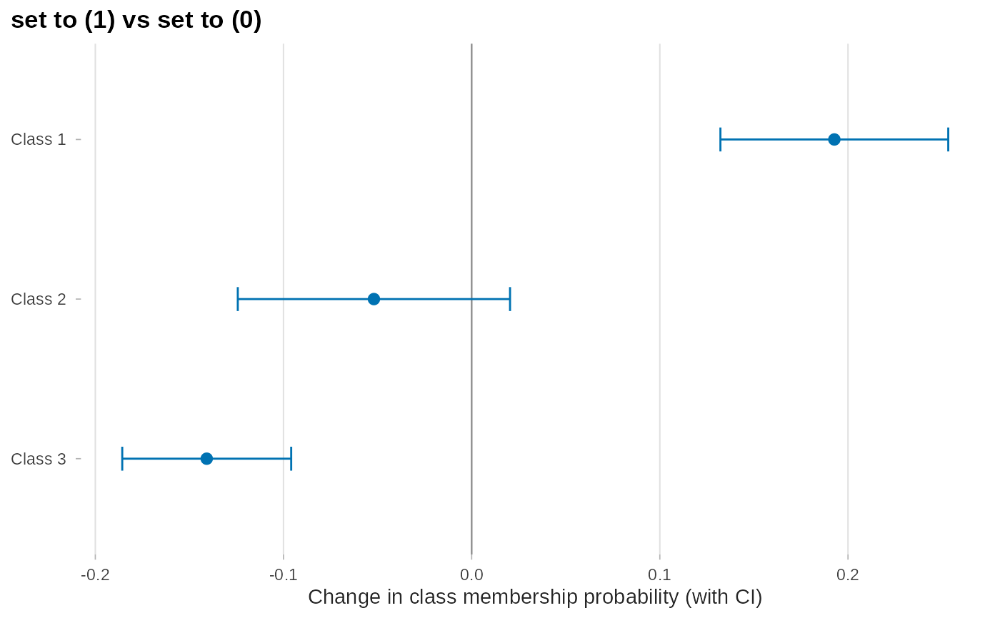

Effects of interventions on exposures on a latent class outcome
intervene_latent_outcome.RdEstimates \(\Delta_k = P(C^{g_1} = k) - P(C^{g_0} = k)\) for a latent class outcome \(C\) measured by a separate measurement model (e.g. adult health-behaviour classes from their own indicators), under hypothetical interventions on binary exposures.
Arguments
- model
A
latentmixtures::lca()(orlpa()) model of the outcome indicators, fitted without covariates to the rows ofdata.- data
A data frame.
- exposures
The binary exposure columns (tidyselect, e.g.
ace1:ace8; 0/1, logical or two-level factors).- intervene
The exposures that are intervened on, selected among
exposures(tidyselect; 1 to 6 columns). Their order is the order of thesetto()values.- confounders
Confounder columns (tidyselect; factors are dummy-coded), or
NULL. Columns that are the outcome or exposures are dropped with a warning.- g1, g0
Interventions compared (
setto(),shift(),natural());g0defaults to the natural course.- estimator
"aipw"(default),"tmle","ipw"or"gformula"(no standard errors).- outcome_model, propensity_model
Working models:
"linear"or"quadratic"(see Details).- folds
Number of cross-fitting folds (1 = no cross-fitting).
- seed
Random seed (folds and bootstrap).
- learners
Machine-learning nuisance models. Besides
"linear"and"quadratic",outcome_modelandpropensity_modelaccept a learner fitted within the cross-fitting training folds:"lasso","lasso_quadratic","elasticnet","ridge","forest","boost"(needs EvoTrees.jl) or"superlearner". A learner for the outcome is fitted within each exposure pattern (or, with rare patterns, to the intervened exposures and \(H\) with the exposures unpenalised) and evaluated at every exposure pattern; a learner for the propensity is fitted to each link of the chain.learnersis the library of the"superlearner": learner names ("mean","glm","glm_quadratic","lasso","lasso_quadratic","elasticnet","ridge","forest","boost"), orNULLfor the default library (mean, glm, lasso, lasso_quadratic, forest).- bound
With a propensity learner, every conditional probability of the chain is bounded to
[bound, 1 - bound]. Not applied to"linear"/"quadratic".
Value
An object of class intervention_class_result: psi1, psi0, delta, se,
se_fixed, se_psi1, se_psi0 per class, min_pi, max_weight, entropy,
pseudo_range.
Details
The class indicators are replaced by bias-corrected (BCH) pseudo-outcomes from the
classification-error matrix of model, as in intervene_membership(), and the intervention
estimator of intervene_effect() is applied to each class. Standard errors include
the estimation of the measurement model (classification-error matrix and measurement
parameters). Identification needs the assumptions of intervene_effect() and a
correctly specified, measurement-invariant outcome model (item-response
probabilities do not depend on the exposures or confounders: no DIF).
How to use
Fit the outcome measurement model on its own indicators, without covariates (
mo <- latentmixtures::lca(data, items, K = 3)), and check its convergence; the exposures and confounders do not enter it.Pass the same data frame (same rows) with the binary
exposures, theintervenecolumns and theconfounders; a single exposure is fine.Choose
g1andg0: the defaultg0 = natural()gives "intervention vs the observed course";g0 = setto(0)gives "everyone vs no one".Read \(\Delta_k\) and check the entropy, pseudo-outcome range and overlap in the printout.
Measurement invariance of
mois assumed; with one binary exposure,intervene_dif()tests it. Seevignette("function-guide").
Examples
# \donttest{
data(programme)
# Question: if every student took part in the programme, how would the shares of the
# three latent wellbeing classes change?
m <- latentmixtures::lca(programme, low_mood:friends, K = 3) # outcome classes, no covariates
#> Starting Julia ...
# everyone vs no one
r <- intervene_latent_outcome(m, programme, exposures = programme, intervene = programme,
confounders = c(female, age, low_ses, distress, belonging),
g1 = setto(1), g0 = setto(0))
r
#> ▸ Effect of an intervention on exposures on latent class membership
#> g1: set to (1)
#> g0: set to (0)
#> aipw, 5-fold cross-fitting; N = 2000, K = 3
#>
#> ─────────────────────────────────────────────────────────────────────
#> P(C^g1=k) P(C^g0=k) Δ SE 95% CI p
#> ─────────────────────────────────────────────────────────────────────
#> Class 1 0.625 0.432 0.193 0.031 [0.132, 0.253] <.001
#> Class 2 0.238 0.290 −0.052 0.037 [−0.124, 0.020] .159
#> Class 3 0.137 0.278 −0.141 0.023 [−0.186, −0.096] <.001
#> ─────────────────────────────────────────────────────────────────────
#>
#> SE from the influence function incl. the measurement model; assumes no DIF.
#> Diagnostics: entropy = 0.666, min pi = 0.0190, max weight = 25.6
# Flourishing 43.2\% -> 62.5\% (Delta = +0.193), Distressed 27.8\% -> 13.7\% (-0.141);
# true +0.179 and -0.120. min pi = 0.019, max weight 25.6.
# everyone vs current take-up (g0 = natural()): +0.105 Flourishing, -0.067 Distressed
intervene_latent_outcome(m, programme, exposures = programme, intervene = programme,
confounders = c(female, age, low_ses, distress, belonging),
g1 = setto(1))
#> ▸ Effect of an intervention on exposures on latent class membership
#> g1: set to (1)
#> g0: natural course
#> aipw, 5-fold cross-fitting; N = 2000, K = 3
#>
#> ─────────────────────────────────────────────────────────────────────
#> P(C^g1=k) P(C^g0=k) Δ SE 95% CI p
#> ─────────────────────────────────────────────────────────────────────
#> Class 1 0.625 0.520 0.105 0.021 [0.065, 0.145] <.001
#> Class 2 0.238 0.276 −0.038 0.023 [−0.083, 0.006] .092
#> Class 3 0.137 0.204 −0.067 0.013 [−0.092, −0.041] <.001
#> ─────────────────────────────────────────────────────────────────────
#>
#> SE from the influence function incl. the measurement model; assumes no DIF.
#> Diagnostics: entropy = 0.666, min pi = 0.0190, max weight = 25.6
autoplot(r)

# }